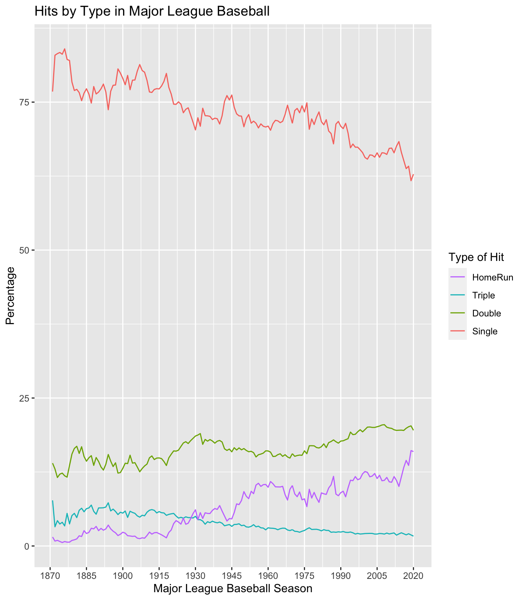
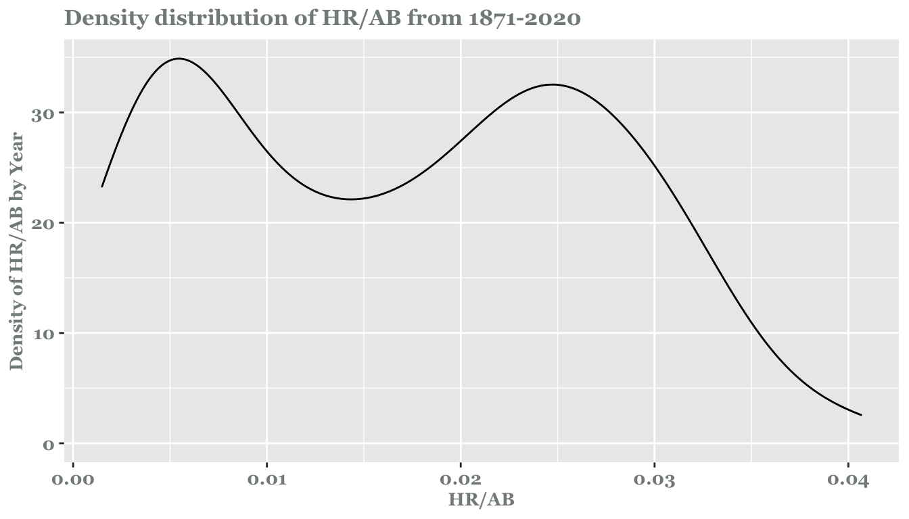
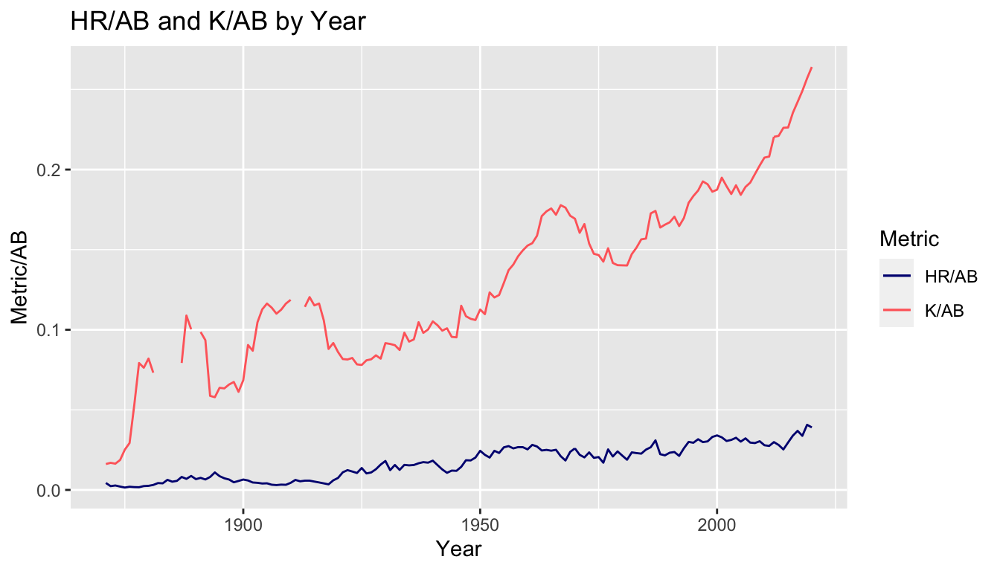
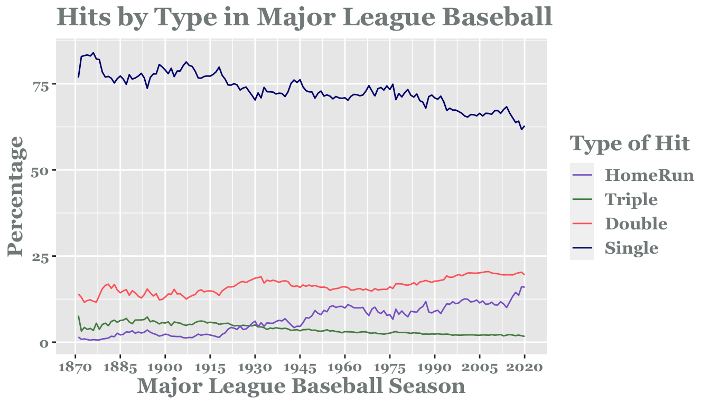
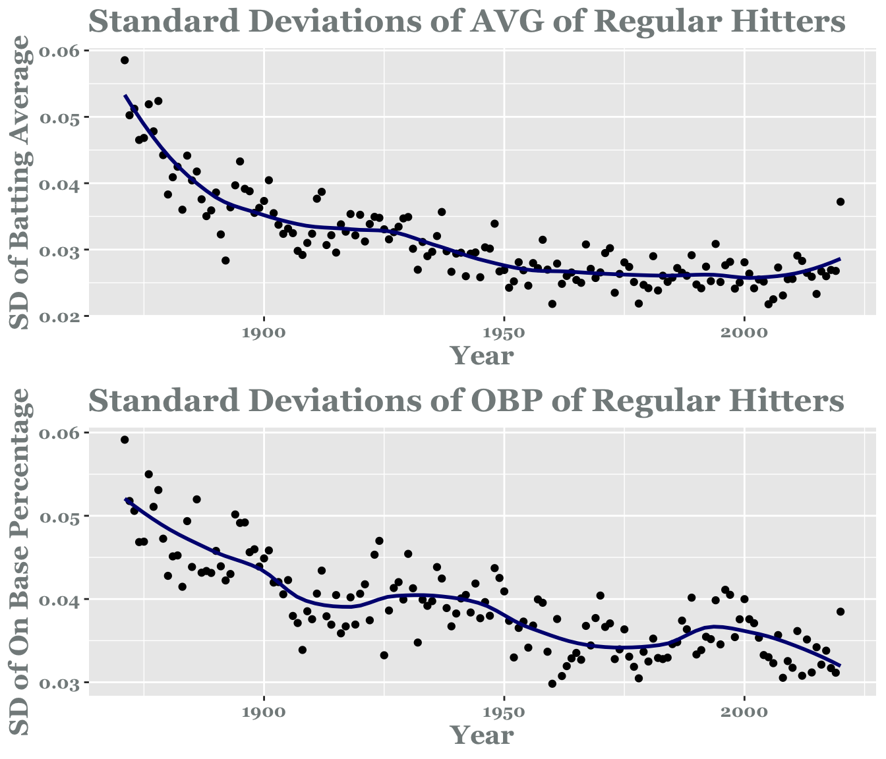
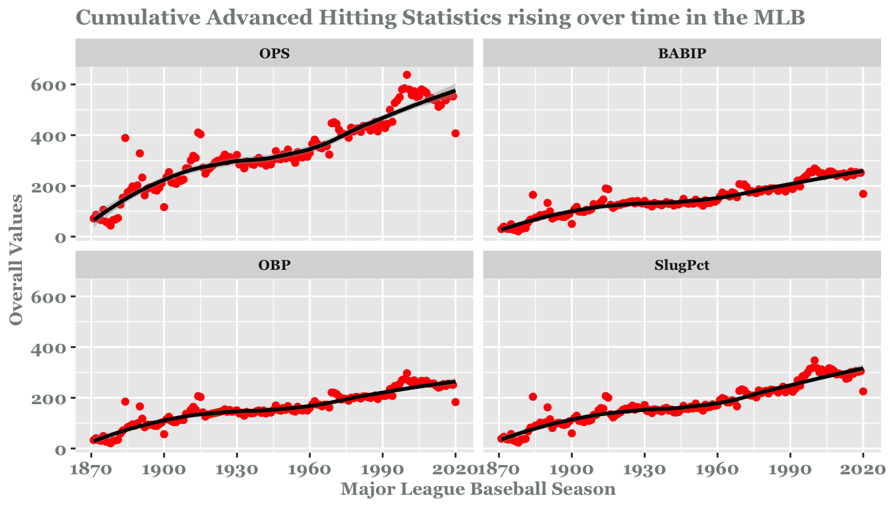
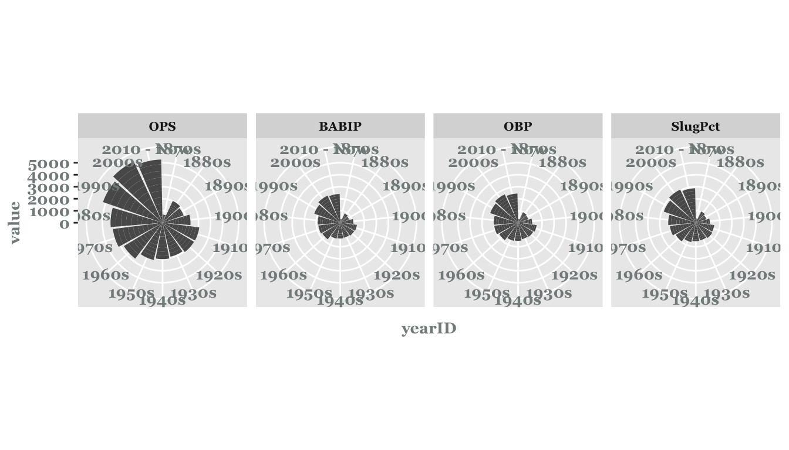
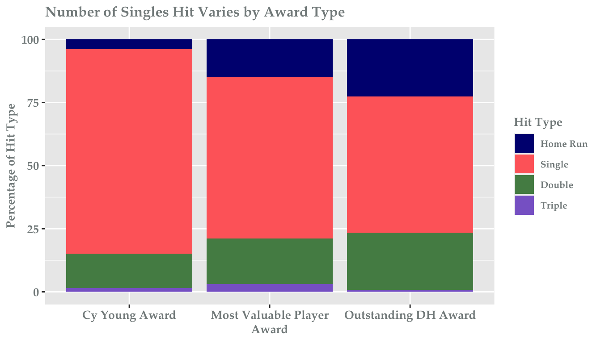

How Has Major League Baseball Changed Over Time?
Exploring the Lahman’s Baseball Database
Exploring the Lahman’s Baseball Database
Frank Driscoll, Cam Garfield, Cole Guerin, Hannah Hartnett
Statistical Graphics, Colby College
Introduction
The Major League Baseball association has served as America’s pastime’s highest level of competition for almost 120 years. We dive into the in-depth historical database that chronicles the sport in order to examine how hitting has changed over time.
The Database
Lahman’s Baseball Database is part of the Comprehensive R Archive Network. The updated version of the database contains complete batting and pitching statistics from 1871 to 2020, plus fielding statistics, standings, team stats, managerial records, post-season data, and more.
Looking at Continuous Hit Data

We began with a high-level analysis of correlations between variables. Unsurprisingly, the number of games, hits, at bats, runs, and runs batted in are very highly positively correlated. There are no negatively correlated pairs of variables, though sacrifice hits have essentially no association with either home runs or intentional walks.
Exploring HRs per AB

HR/AB by year has a two peaked distribution, with the first at around 0.05 representing the high concentration of low HR/AB numbers in the early years and the second at around 0.025 representing a concentration of higher HR/AB seasons. There is a decent right skew representing the rapid increase in HR/AB in recent years.
What influences number of home runs hit?

Over the years, both home runs and strikeouts have increased, indicating a transition from small ball baseball with where pitchers throw to contact, to high power baseball where stronger hitters try to hit home runs and pitchers with increased velocity go for strikeouts.
Exploring Hit Type

It looks like that baseball has adapted over time so that less singles are being hit, while more doubles and home runs are being hit, and triples are becoming less common. There is a particularly large increase in home runs in the last 10 years, and a particularly large decrease in singles in the last ten years.
Batting Average getting Lower?

There was a recent study about the disappearance of the 0.400 batting average in baseball. It was theorized that this is because the batting average among “regular” players is steadily decreasing overtime, and that great hitters are moving closer to the average because of this smaller variation, so less baseball athletes have been able to reach the 0.400 batting average mark. From the top plot, we can see that the standard deviation of batting average for so called “regular” players has decreased over time, but it has been very consistent in the last 60 years. A different batting statistic, that has seen more of a drop recently, is the standard deviation for on base percentage which is shown in bottom plot.
Hitting Statistics Rising


Awards and Hitting Relationship
